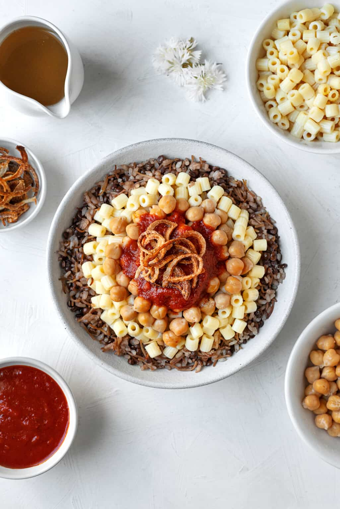

Bobotie

Description
Koshary is Egypt's national dish and a widely popular street food.
It is a traditional Egyptian staple, mixing pasta, Egyptian fried rice, vermicelli and brown lentils, and topped with chickpeas, a garlicky tomato sauce, garlic vinegar, and crispy fried onions.
Garlic, vinegar and hot sauce can be added to taste.
Ingredients
- 450g rinsed and drained chickpeas
- 350g cooked ditalini
Fried onions
- 3 large unions, sliced in thin rings
- 3 tsp kosher salt
- 1 1/2 tbsp cornstarch
- Vegetable oil
Tomato Sauce
- 2 tbsp fried onions
- 1 tbsp vgetable oil
- 6 chrushed garlic cloves
- 175g tomato paste
- 425g tomato sauce
- 3 cups water
- Salt and pepper to taste
- 3 tbsp white vinegar
- 1/2 tsp cayenne pepper
Rice and Lentils
- 2 tbsp vegetable oil
- 1/3 cup fried onions
- 2 cups brown lentils
- 2 cups short grain rice
- 1 cup toasted vermicelli
- 6 cups water, 2 hot and 4 cold
- 1/2 tsp ground cumin
Cumin Sauce (Dakaa)
- 3 tbsp white vinegar
- 4 chrushed garlic cloves
- 1 tsp ground cumin
- 1/2 tsp salt
- 1/2 tsp ground black pepper
- 1/4 tsp cayenne pepper
- 1/2 cup hot water
Steps
Fried Onions
- Slice onions thin. Sprinkle salt and cornstarch. Toss together.
- Add vegetable oil to a large deep pan to cover the bottom by 1-inch. Fry at 350 degree F. stirring every now and then, onions should be nice and golden brown, Approximately 10-12 minutes. Reserve oil!
- Line a plate with a paper towel. Add onions in a single layer and let drain on the paper towel. Set aside to harden.
Tomato Sauce
- In a saucepan on medium heat add oil and garlic. Sautè until fragrant. approximately 1-2 minutes. Be careful not to burn the garlic!
- Add onions, tomato sauce, tomato paste, vinegar, water, salt and pepper. Bring to a boil, reduce heat to medium-low and cover, let simmer for 15 minutes.
Rice and Lentils
- In an enameled dutch oven or heavy pot on medium high heat, add oil with the fried onions, lentils, and 1 tbsp salt. Stir for 1-2 minutes. Add 4 cups water and bring to a boil. Keep heat on medium high, (it should be a gentle boil) for approximately 12-15 minutes or until the lentils are al-dente. *DO NOT DRAIN WATER.
- Stir in rice, vermicelli, hot water, an additional tablespoon salt and ground cumin. Bring to a boil, cover and reduce heat low for 12-15 minutes or until pasta is tender. Fluff with a fork.
Cumin Sauce
- Add all the ingredients in a measuring cup and whisk to combine.
Assembly
- Koshary is all about the layering! Add the rice with lentil mixture as the base, top with cooked pasta, chickpeas, and fried onions. Drizzle with tomato sauce and cumin sauce.
Recipe from Food Dolls